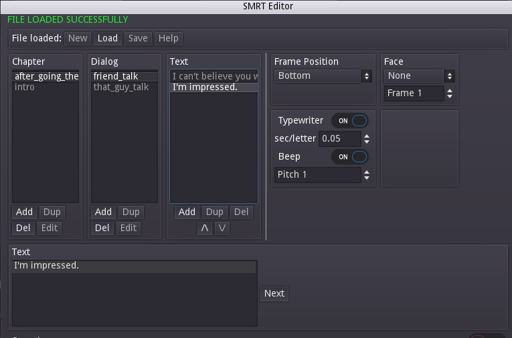

Using SMRT-Godot - The dialog system with a fancy name
This post is long due, but I found some motivation after talking to
Nathan(from GDQuest, featured in my list of gamedev
resources).
In here I’ll show a simple project to highlight some of the features of
SMRT.
You can find this project in SMRT’s examples folder at the project’s github repository, download it and follow along.
Play the scene and interact with the characters before proceeding…
Done?
Let’s just go over the basic concept of SMRT: chapters, dialogs and
texts
Texts are a single dialog box worth of text
Dialogs are a collection of texts, they are referenced through
an unique name.
Chapters are a collection of dialogs. They represent the same
concept of chapters in a book: A new point in the story. So they can say
different things, while keeping the same dialog names with just a change
in chapter
We will focus basically on the code for the following:
- World: It will be very simple, just setting the initial conditions for the rest of the scene through the use of Globals
- Transition: A simple transition that will be played at a specific time later on.
- Player’s avatar: With simple 8 directions movement.
- NPC node: That can detect if the player entered its interactive area and say things. to the player.
- A trigger: Basically an instance of the npc node with no sprite. It will be initially blocked by an NPC. When the player enters its area, a cutscene will play, and at the end of this cutscene, the chapter will change.
For SMRT to work properly, it should be a child of a CanvasLayer. SMRT also needs a language file, it is a JSON that has info on how it should display messages.
I created an editor for this process, access it by clicking on the following button:
{kind=link}
Use the load button and navigate to res://examples/cave to
load another_example.lan 
{kind=link}
Click in a chapter to display all available dialogs in the dialog’s viewer, then click in one of the texts to edit its properties. For actions, you can add, duplicate, edit and delete chapters and dialogs while you can add, duplicate, delete and change the order of the texts with the arrows bellow the text field.
Careful! There is no confirmation for deleting anything. So if you do something you didn’t meant to, providing you haven’t saved it yet, just load the file again.
The transition
{kind=link}
It’s setup:
{kind=link}
{kind=link}
It is a texture of 64x64 pixels that covers the entire viewport, with two keyframes for opacity: It starts at 0 and ends at 1.
The world
{kind=link}
The most important line is the forth one. On it, we create a global variable called ‘chapter’ with the value ‘intro’.
In the script for the npcs this value will be used and changed as desired.
Lines 5 and 6 are basically SMRT and a fade transition node respectively.
The player
{kind=link}
Just simple movement, our player class will be passive, it will not have the methods to interact with objects by itself, this will be the work of the NPC node.
Take note of line 7: This is how we will identify what character is the player for our NPCs.
|
|
The NPC
{kind=link}
It is a duplicate of the player char with an Area2D for the interactive area.
|
|
The variables from line 5 through 7 will dictate what the character will say, based on the language file loaded in SMRT. Exporting them, allow each instance to have its own string. The NPC will be responsible to see if the player entered its interactive area, for that, we need to connect the area2D to the npc.
Doing it with the editor for one or two npcs is fine, but it is better to do it through code, this way we don’t need to keep connecting areas to new npcs, This is done at _ready() in line 10.
We connect the interactive_area to the function “on_body_enter” inside the npc itself. This function first checks if the body that entered is the player, then see if the npc has something to say (the dialog_name is not empty nor null) and if it can interact.
If those conditions are met, we make can_interact false so we don’t fire the event again until the dialog finishes, grab SMRT and the chapter in small variables(lines 19 and 20), stop the process of the player so he won’t be able to move while the dialog happens (line 21) and finally call show_text(chapter, dialog_name, start_at).
With this, we have a basic interaction between player and npc. We can pretty much make them say whatever we want. But the example is far from over…
The npc that is blocking the exit will ask a question and make things happen based on it. This happens thanks to the signal “dialog_control”. It can give us important info like the answer a player gave in a question.
At line 24, we check if the signal dialog_control is already connected. If it isn’t, we connect it to the npc’s function *on_dialog. *
Then, through lines 44 and 45 we check if we’re in the “intro” chapter and if the dialog playing is “friend_talk”, checking for the answer index sent by SMRT. So we check for the first option to be clicked and make the npc move out of the way. We also change the dialog the char will say from now on to friend_talk_positive.
It may seem obvious, but you should handle what the answers will do. If you don’t code anything, SMRT will simply continue the dialog until the end, regardless of the answer selected. This is also why we don’t check for the negative option, as the dialog will simply continue to it.
The Trigger
The trigger is a duplicate of the npc. It behaves exactly like one with the exception that it doesn’t have a sprite set. Its dialog is set to “great_adventure”.
This is also handled inside the npc’s script. from line 56 to line 63.
When the very first message of great_adventure finishes, the screen will fade to black while the dialog continues. At the end of it, we change the chapter global to “after_going_there” and life goes on.
The second NPC
{kind=link}
This one just illustrates the usefulness of the chapter > dialog paradigm. This npc will start the dialog “that_guy_talk”. In the language file, there exists two versions of “that_guy_talk”, each in the two different chapters.
This is all you need to do to make the same chars say different things based on moments of the game.
Final thoughts
This can give you a pretty good foundation to work with SMRT in your projects.
I hope this helps you work on your game. I learned a lot thanks to people writing articles, sharing knowledgement and directly helping me in my doubts. In a way, it is me continuing the cycle.